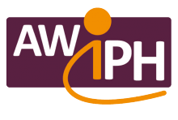
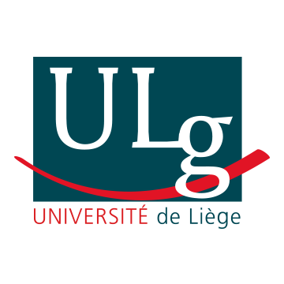
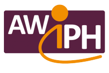
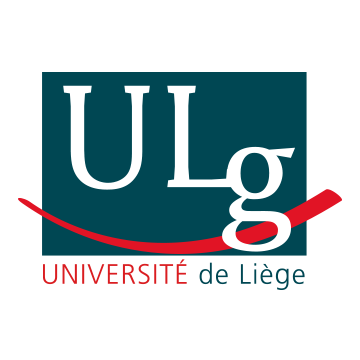

ASBL Entrevues
Principales actions :
- L'éducation de chiens guides
- La formation des personnes handicapées visuelles à l'utilisation de ces chiens
- La sensibilisation et l'information en matière d'accès des chiens d'assistance aux lieux publics
- La recherche de moyens financiers pour fournir le chien guide gratuitement aux bénéficiaires
Elle est installée depuis 2002 à Liège au sein d'une école spécialisée pour les jeunes déficients sensoriels.
Grâce à nos moniteurs professionnels et nos nombreux bénévoles, nous éduquons et offrons des chiens guides qui ont été sélectionnés de manière rigoureuse.
Les personnes déficientes visuelles bénéficient d'une formation complète aux techniques de guidance canine et d'un suivi tout au long de la vie du chien guide.
"Website creation isn't something you learn once and then check off on your to-do list."
– Jeffrey Veen
Autres associations :
 


